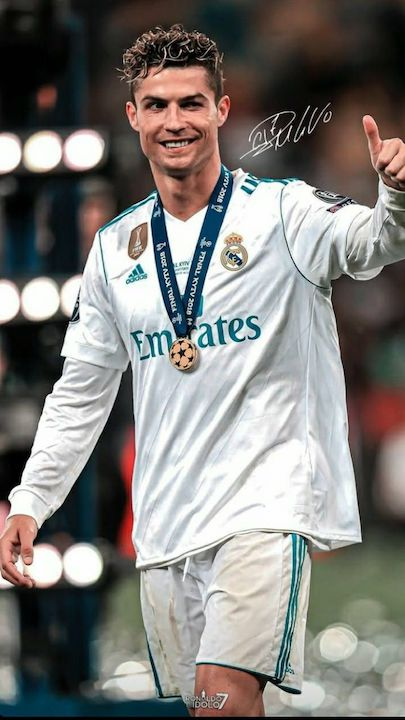

Cristiano Ronaldo dos Santos Aveiro is regarded as one of the greatest football players in the history of the game. This is not only due to his natural talent but also his unparalleled discipline and a mindset that knows no impossible, making him a global "icon" that transcends the boundaries of the football pitch.

Born on February 5, 1985, in the modest neighborhood of Santo António on the island of Madeira, Portugal, Cristiano was the youngest child in a family that faced many financial hardships.

His journey began at a local club called Andorinha , but his life changed forever when he moved to the mainland to join the Sporting Lisbon academy at the age of 12. In Lisbon, he showcased extraordinary speed and technical flair. The defining moment of his youth came in 2003 during a friendly match against Manchester United; he was so dominant that the United players famously urged Sir Alex Ferguson to sign the "young kid" before they left for England.
Manchester United (The Rise to Stardom):
Under the mentorship of Sir Alex Ferguson, Ronaldo transformed from a skinny winger into a lethal force. He won three consecutive Premier League titles and the 2008 UEFA Champions League. That same year, he won his first Ballon d'Or, cementing his status as the best in the world
Real Madrid (The Peak of Greatness):

In 2009, he joined Real Madrid for a then-world-record fee. During his nine years at the Santiago Bernabéu, he rewrote the history books, becoming the club’s all-time leading scorer with 451 goals in 438 matches. He was the cornerstone of the team that achieved the historic "Three-peat"—winning three consecutive Champions League titles (2016, 2017, 2018).
-
Juventus (The Italian Challenge):
Seeking a new challenge at the age of 33, he moved to Italy. He proved his versatility by dominating Serie A, winning two league titles and becoming the fastest player in Juventus history to reach 100 goals.
Al-Nassr FC (The New Frontier):
In a historic move in 2023, Ronaldo joined the Saudi club Al-Nassr. This move was not just a sporting transfer but a cultural shift that brought global eyes to the Saudi Pro League. Even in his late 30s, he continues to break records, becoming the first player to score 100 goals for four different clubs.
Ronaldo’s footballing identity has passed through three pivotal stages:
Adolescence (Sporting Lisbon):
He was a flamboyant showman, relying on pure individual skill and lightning-fast footwork (step-overs).
Maturity (Manchester United):
Under the refinement of Sir Alex Ferguson, he transformed into a lethal winger, combining pinpoint crossing with long-range shooting. It was here that he developed his trademark "Knuckleball" free-kick technique.
The Decisive Phase (Real Madrid and Beyond):
He gradually evolved into a complete "penalty box predator." He became a master of off-the-ball movement, vertical leaps that rivaled basketball players, and clinical one-touch finishing.